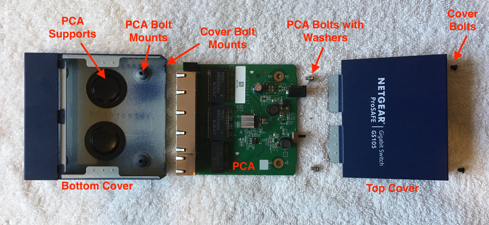
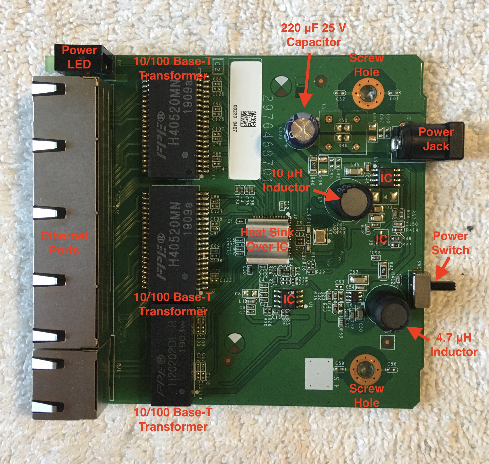
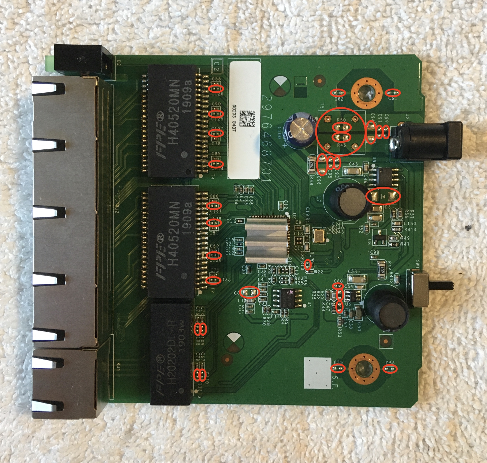
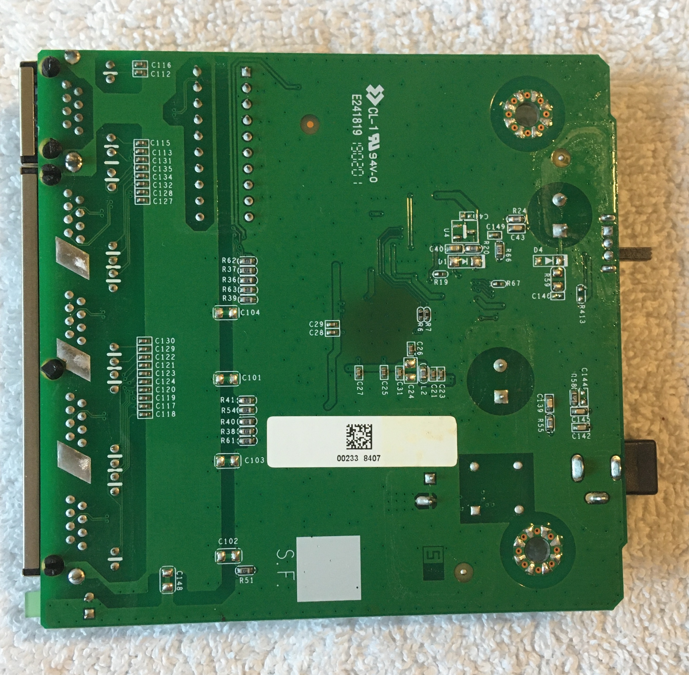
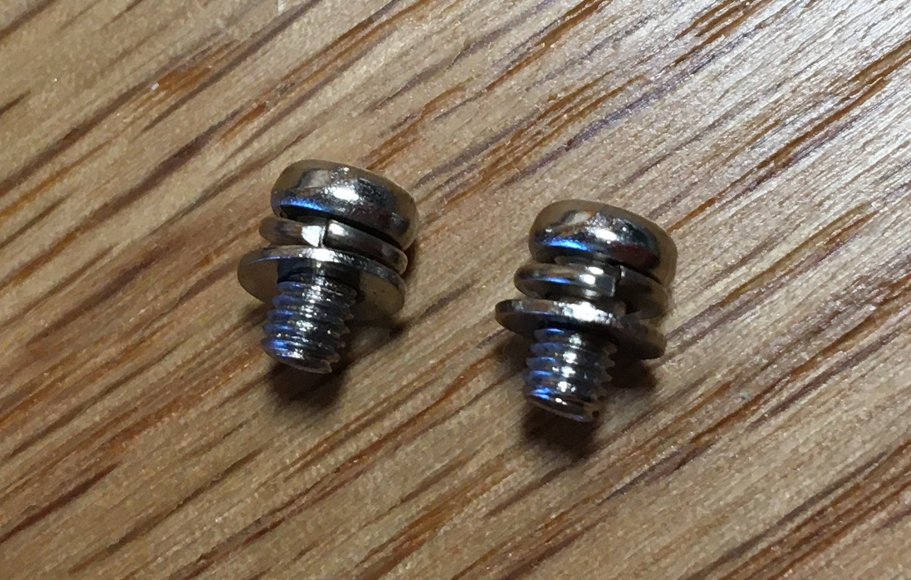

Introduction
One of my dad's passions is internet networking. When he heard I was tearing down any technology I could get my hands on, he gave me a broken ethernet switch he had lying around and we walked through the teardown together along with my brother. The switch is a Netgear ProSAFE 5-port Gigabit Switch with model number GS105.
Fundamentally a switch is just a device that is used to manage data transmission between multiple devices. Data enters the switch from different devices and is sent out to the appropriate devices via ethernet ports. Switches are not to be confused with hubs, a similar network device also used to manage data transmission between multiple devices. In a hub, any data transmitted by one device is sent out on all ports of the hub, leaving it up to the devices to determine whether or not the data is addressed to them. The same concept is initially used in a switch, but over time it develops a map of which devices are located at which ports. Using this map, the switch is then capable of sending incoming data directly to the device the data is addressed to, rather than sending it out on all ports. While the additional complexity of switches had made them significantly more expensive to manufacture than hubs, improvements in the manufacturing process have made switches just as accessible. Given the much lower data transmission efficiency of hubs compared to switches, the use of hubs has been for the most part relegated to the past.
Switches are often employed in internet networking to extend a network by providing different locations at which devices can be connected into the local network. In a home, the local network is usually provided by a modem-router device. Connecting switches (or series of switches connected to one another) to the modem-router, links all the devices connected to the switches to the modem-router and thus the home network. The ethernet port at which the switch connects to the router (or other switches) has been historically called the "uplink" and separated from the other ports. However, in modern switches the uplink port no longer serves a functional purpose and the router (or other switches) can be connected to any of the ports on the switch.
The Netgear ProSAFE 5-port Gigabit Switch is capable of hosting connections to four devices in addition to the uplink connection to the router. Since the ports are capable of sending data at 10 Mbps, 100 Mbps, and even 1000 Mbps (1 Gbps), the switch is classified as a gigabit switch.

Original Switch
Labelled Exploded View of Switch
Switch PCA
With the exception of the metal cover and bolts, the entire switch is contained on one PCA. The user-accessible portions of the PCA include five ethernet (RJ-45) ports each with a set of green LEDS to indicate link, activity, and speed; a green power LED; a power jack requiring 12 V DC; and a power switch. These externally accesible components are pictured below. The port labeled 5 and separated from the rest is designed to be used as the uplink, where the router (or other switches) would be connected. Although the router could be connected to any of the ports, it is likely clearer for troubleshooting purposes to use the uplink port for the connection to the router (or other switches).
Ethernet Ports
Ethernet Ports (exposed)
Power Switch and Jack
Power Switch and Jack (exposed)
Removing the metal cover of the switch and examining the PCA, the magic of the switch is only partially revealed. I say "only partially revealed" because the microscopic circuitry contained inside the several ICs is hidden away. The PCA includes components mounted using both surface-mounted technology (SMT) and through-hole technology (THT). The SMT components on the top face of the PCA included 2 transformers, 4 integrated circuits (ICs), ~30 resistors, ~50 capacitors, 4 inductors, and 1 diode. The THT components included 1 transformer, 5 ethernet ports, 1 power LED, 1 power jack, 1 power switch, 1 capacitor, and 2 inductors. Below is a labelled picture of the top face of the switch PCA. The 3 Base-T transformers adjacent to the ethernet ports are likely involved in transforming the current flowing through the ethernet cables into a format that can be easily handled by the PCA. According to Wikepedia, the name Base-T indicates that the transformers accept a baseband signal (BASE) transmitted over the twisted pair cable (T) of the ethernet cable.
Labelled Top of Switch PCA
It is interesting to note that one of the ICs, likely a microprocessor, was mounted with a heat sink holding three vertical fins. The patch of solder mask on the bottom side of the board directly below this IC is darkened, clear evidence of heat damage. The heat transfer associated with this IC was likely an important design consideration.
Hoping to turn up some interesting information about the board, I scanned the data matrix code (similar, but different from a QR code) on the white sticker label. The scan returned "RM1907519519002338407". I'm unsure what to make of this information. It is likely either a model number, serial number, or date code; but it could also be a combination of those. Looking at the date codes on the Base-T transformers, "1903w" and "1909a", the transformers were developed in the 3rd week of 2019 and 9th week of 2019 respectively. Therefore, it is likely that the PCA was manufactured and sold in early 2019.
Oddly enough, not all labelled spots on the circuit board were actually mounted with components. In fact, it seemed like many were missing, but the product still functioned as expected. This perplexed me. Possibly this same PCB was used for several different Netgear products distinguished by which components were mounted to the PCB. Below is a picture of all the missing components on the top of the PCA circled.
Missing Components on Top of Switch PCA
The SMT components on the bottom face of the PCA included ~35 capacitors, ~20 resistors, and 1 inductor. Below is a picture of the bottom face of the switch PCA. Note the darkened patch of heat damage from the one IC with the heat sink mounted on the opposite side. Another interesting observation to be made is the black split rivets used to secure the ethernet ports in addition to their soldered pin connections to the board. One potential explanation for this additional support at the ethernet ports may be the greater wear that would occur at these locations as users plug and unplug ethernet cables.
Bottom of Switch PCA
PCA Bolts
Although the switch was primarily an electrical product, the bolts used to mount the PCA inside the switch cover were noteworthy. Attached to each of the small PCA bolts were two washers. A split-ring lock washer closest to the head of the bolt and a flat washer below that. As the bolt is tightened down and the washers are pressed up against the PCB, the two ends of the split ring are forced back into alignment. As a result, pressure is built up between the bolt and the flat washer, reducing the likelihood that the bolt will loosen over time due to vibrations.
PCA Bolts with Washers